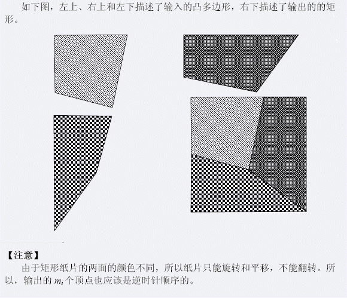

5岁的小P对剪纸很感兴趣，他总是喜欢把一个矩形的纸片剪成一个又一个的凸多边形。但是，每一次剪完后，他总
是怀疑自己弄丢了一些纸片。聪明的他想到了一个方法来检测纸片是否弄丢：他将这些凸多边形拼起来，如果能够
拼成一个矩形，他就认为纸片没有弄丢。由于纸片的数量不是很多，这个工作并不难。但是，久而久之，他对这项
工作不感兴趣了，所以，他找到了你，希望你能够告诉他，这些凸多边形纸片能不能够拼成矩形。
| F.A.Qs | Home | Discuss | ProblemSet | Status | Ranklist | Contest | 入门OJ | ModifyUser Xeonacid | Logout | 捐赠本站 |
|---|
